第 8 章 机械臂控制¶
本页目录
Robotic Manipulation: Perception, Planning, and Control
本章目录 · 章节概览
本章目录¶
前几章已经建立起初步工具箱：感知单个物体或杂物堆，规划抓取，再移动机械臂执行。最近还学习了生成平滑关节轨迹，让机器人快速从一次抓取移到下一次。期望轨迹越接近机器人的动力学极限，执行它的控制方法也就需要更精细。
操作远不只是抓取！即使箱内抓取，我们也已见过只靠抓取不够的情况。想象从机器人相机里看到这样的场景：
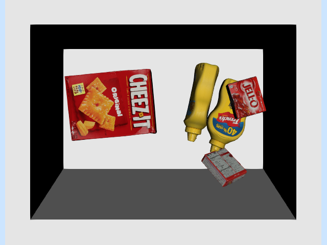
用双指夹爪，究竟怎样拿起这盒 Cheez-It 饼干？我知道有人会觉得吸盘轻而易举，但光靠吸附也解决不了所有问题。
图 8.1：我请女儿用从厨房找来的“双指夹爪”试试类似任务。这样的行为，该怎么编程呢？
非抓取操作（nonprehensile manipulation）就是不先抓住物体的操作，人类经常这样做。推一把太大、抓不住的办公椅，很容易理解。仔细观察还会发现，滑动、借助环境接触等策略，即使抓住物体时也常用，只是在非抓取任务中更明显。
此前以运动学为主，还缺少对力的讨论。本章不仅介绍轨迹跟踪，也介绍主动考虑接触力的控制方法。希望读完后，你会认同：我们确实能想出令人满意的办法，把这盒饼干翻起来！
8.1 机械臂控制工具箱¶
这里的机械臂控制，指把较高层的指令，例如期望关节位置、速度或空间力，转换为电机指令。本章假设能直接给定广义力；对转动关节，就是关节力矩。这些控制器只考虑机器人本身，不考虑环境中的物体，因此单独不能完成有意义的任务。但它们提供更高层抽象，方便构建其余控制系统。
这些低层控制通常运行在机械臂或控制柜固件中。使用硬件时，要理解原理和参数设置；仿真时，则需要自己实现它们，才能模拟机器人。
Drake 提供多种机械臂控制实现，本章会逐一介绍与机械臂最相关的几种：
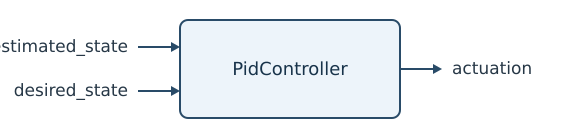
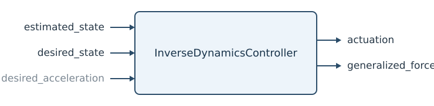
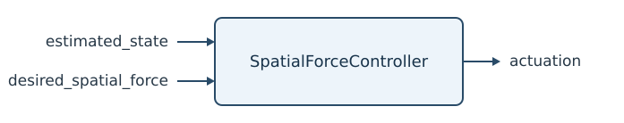
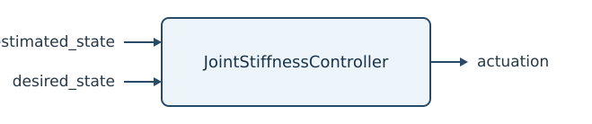
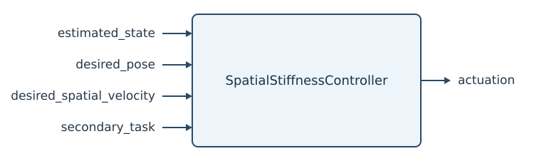
希望读完后，你能理解它们的基本原理和差别。
8.2 先把机器人看作质点¶
面对复杂问题，仍先找尽可能简单、又不失关键机制的模型。翻盒例子先限制在二维平面，既可去掉箱子的两侧，方便看内部，也减少自由度。给盒子加 PlanarJoint，避免浮动基座的四元数坐标。手也简化为“点手指”，画成小球，两个输入直接作用于质点的 \(x\)、\(z\) 方向。
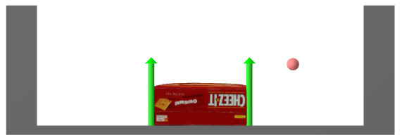
图 8.2：二维简化模型：点手指、饼干盒与箱子。绿色箭头表示接触力。
本章始终区分两个动力学模型。完整仿真模型包含手指、盒子和箱子，共五自由度：盒子 \(x, z, \theta\)，手指 \(x, z\)。控制器模型只含手指的两自由度，并承受未建模接触力。它特意设计得很简单：
。其中 \(m\) 是质量，\(\tau_g\) 是重力“力矩”，此处即 \(\tau_g = [0, -mg]^T\)；\(u\) 是控制输入，\(f^{F_c}\) 是作用于手指 \(F\) 的点 \(c\) 上的笛卡尔接触力。
本章大量使用空间力记号。上式 \(f^{F_c}\) 表示作用于手指 \(F\)、点 \(c\) 上的力；同一个接触对盒子 \(B\)、点 \(c\) 的作用记为 \(f^{B_c}\)。自然有 \(f^{F_c} = - f^{B_c}\)，因为它们大小相等、方向相反。不仔细区分，后面很容易弄错正负号。
8.2.1 轨迹跟踪¶
接触盒子前，先学会让手指在空中运动。假设通过优化等方法已得到漂亮的期望轨迹 \(q_d(t)\)，且 \(q_d(t)\) 二阶可微。要跟踪它，应发送怎样的广义力指令？
最常见的起点是比例—积分—微分（PID）控制，讨论位置控制机器人时已见过。PidController 使用：
，其中 \(K_p\)、\(K_d\)、\(K_i\) 分别是位置、速度和积分增益。它们常为对角矩阵，使各关节独立控制。操作任务通常不使用积分项，取 \(K_i = 0\)：如果机器人顶住墙，无法达到 \(q(t) == q_d(t)\)，积分会不断累积，指令越发越大，直到触发故障。
PD 很有效，几乎不需要动力学知识；但这也限制性能。若知道动力学，就能跟踪得更好。点手指的 \(z\) 方向在 PD 下的闭环动力学为：
。给定正弦轨迹 \(z_d(t)\)，并在 \(z\)、\(\dot{z}\) 上稍偏离轨迹启动，结果为：
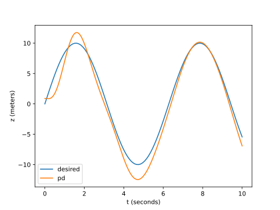
。实际运动虽跟着期望走，仍有持续误差。甚至期望是常数 \(\dot{z}_d = 0\)，也会有稳态误差 \(\tilde{z} = z_d - z\)。直观地令 \(\dot{z} = \ddot{z} = 0\)，得
：此时 PD 恢复力刚好抵消重力，没有剩余作用继续消除误差。
从方程可见，把重力信息告诉控制器就会更好，这叫重力补偿。重力补偿加 PD，在 Drake 中作为 JointStiffnessController 提供：
。原因后面会解释。点手指 \(z\) 方向的闭环动力学为
，没有稳态误差，跟踪也改善了：
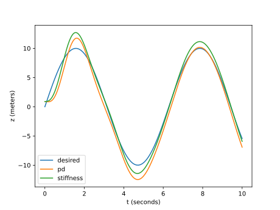
复杂轨迹仍有误差。还有一个已知、尚未用上的信息：\(\ddot{q}_d(t)\)。将控制律稍改写为：
，其一般形式在 Drake 中是 InverseDynamicsController。两点变化：加入加速度前馈，并让 PD 项乘以质量。于是闭环误差动力学简化为：
，就是熟悉的质量—弹簧—阻尼模型。合理选 \(k_p\)、\(k_d\)，误差便良好地收敛到零，跟踪效果最好：
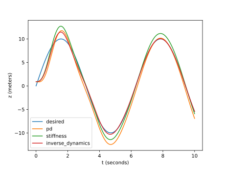
示例 8.1 质点轨迹跟踪¶
这些绘图代码都放在 notebook 中，可以自行调整试试。
运行示例：在 Colab 中打开
8.2.2 直接力控制¶
接触发生后，问题更有意思了。本例中手指碰到盒子，此时目标可能不只是位置、速度、加速度，还包括施加给盒子的交互力。
最简单地，先完全不调节手指位置，低层控制器只接收期望接触力，再产生广义力输入，使实际接触力尽量匹配。
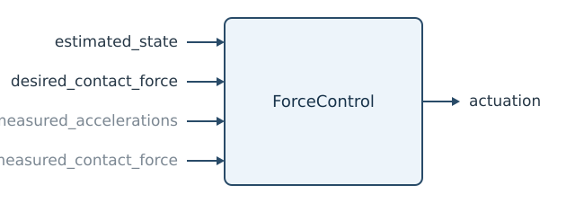
需要哪些信息？当然需要期望接触力 \(f^{F_c}_{desired}\)，一般也需要机器人状态，虽然此处质点动力学与状态无关。另外还要满足以下之一：测量加速度，但我们尽量避免，因为测量常很噪；假设加速度为零；或者测接触力，通过反馈调节。
先假设已经接触盒子，加速度近似为零。对动作较慢的许多操作任务，这并不离谱。动力学简化为
，力控制器只需 \(u = -mg - f^{F_c}_{desired}.\)。注意只需知道机器人质量，不需要盒子质量。
未接触时怎样？这时不能忽略加速度，相同控制导致 \(m\dot{v} = - f^{F_c}_{desired}.\)。其实并不坏，反而是力控制很有吸引力的特性：想要的力没有出现时，接触点就沿期望力的反方向加速。局部来看，这往往能让尚未接触的机器人主动靠到物体上。
示例 8.2 给定恒定力¶
完整仿真同时包含未接触、接触，以及涉及碰撞动力学的过渡。把点手指放在盒子旁，请求盒子给手指一个恒定水平接触力。下图画出不同恒定力指令下，手指的 \(x\) 轨迹。
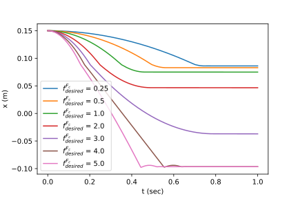
图 8.3：不同恒定期望力下，手指水平位置随时间变化。
所有严格为正的期望力，都使手指匀加速，直到在 \(x=0.089\) 撞到盒子。\(f^{F_c}_{desired}\) 很小时，盒子几乎不动；\(f^{F_c}_{desired}\) 中等时，碰撞使盒子开始动，但摩擦最终让盒子和手指停下；较大时，手指持续推盒子，直到碰到另一侧箱壁。
运行示例：在 Colab 中打开
这意味着，只要发力指令，就能几乎不依赖盒子几何建立良好接触。感知只需保证起始位置沿直线前进能碰到盒子。
腿足机器人研究者也喜欢力控制。支持力控制的步行机器人，可在摆腿阶段用类似位置控制，让脚大致到预期落点；落地时再切换力控制。这样能明显降低精确地形感知的要求。
示例 8.3 基于力的翻盒策略¶
一个简单方案是：接触后，用手指的力对盒子左下角产生力矩，使其转动；同时约束接触力，避免该角点滑动。
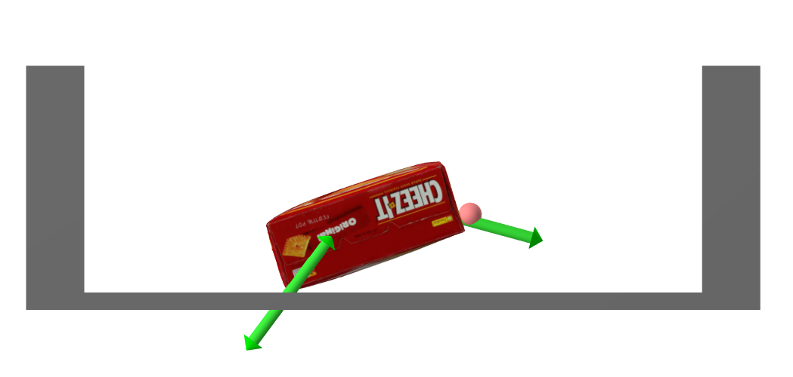
图 8.4：翻起盒子。点击这里观看下面控制器的动画。也值得亲自运行代码，因为还能看到接触力！
这些要求很自然地用力表达，仍只需很少盒子信息。接触力施加后，手指位置会自然变化。我很难想出同样稳健的高增益位置控制方案；它恐怕需要更多几何乃至质量假设。
将上述策略写成盒子受力。\(C\) 是手指与盒子的接触坐标系，法线垂直表面、指向盒内；\(A\) 是盒子左下角与箱子的接触坐标系，法线沿世界 \(z\) 正向竖直朝上。
其中 \(R_y(\theta)\) 是绕 y 轴旋转 \(\theta\)。还有作用于质心 com 的重力：
。这里大量用到前面介绍的空间力记号和代数。
摩擦锥给出力的线性不等式约束：
。确认理解这些记号。我们要在约束内把盒子翻起。
绕 \(A\) 转动，需要看关于 \(A\) 的总力矩：
。但 \(\tau^{B_A}_{ground, W} = 0\)，因为力臂为零。我希望尽量少假设盒子质量、几何，因此不精确调节力矩，而写成
。面对未建模项，可以反馈盒子角度 \(\theta\)，即 \({}^WR^B\) 的 \(y\) 分量：
。\(\theta_{d}\) 简写期望角度，\(\text{PID}\) 简写简单 PID 项。注意 \(\tau^{B_A}_{finger,W_y} \propto f^{B_C}_{finger, C_x},\) 中的常系数只依赖 \({}^B\hat{p}^C;\)，实际上与 \(\hat\theta.\) 无关。
在摩擦锥约束下实现期望 PID，可用约束最小二乘：
。最后一行虽包含空间代数，给定 \(\hat\theta\) 后仍是线性约束。实现假设如下：
-
有盒子朝向的近似 \(\hat\theta\)，可由点云法线，甚至手指轨迹估计。
-
有墙与盒子之间静摩擦系数 \(\hat\mu_A\)、手指与盒子之间静摩擦系数 \(\hat\mu_C\) 的保守估计，以及手指相对角点的位置和盒子质量 \(\hat{m}.\) 的近似。
。请试着改变估计精度，看看能放宽到什么程度。你会发现，方法对盒子质量、几何误差相当稳健。
运行示例：在 Colab 中打开
本例有两层控制：低层接收期望接触力，发机器人指令以实现它；高层观察盒子朝向，决定向低层请求什么力。
这并不是唯一或最优的翻盒策略。我只是想说明，有些难用其他方式表达的控制，写成力就很自然！
8.2.3 间接力控制¶
另一种思路很漂亮：不直接指定接触力，而把机器人控制成一个简单机械系统，使其按期望方式响应外力。Ken Salisbury 的刚度控制 参考文献 1，以及 Neville Hogan 的阻抗控制 参考文献 2、参考文献 3、参考文献 4，都在重要的系列论文中阐述了这种理念。
想象你推 iiwa 的末端。只知道机器人参数，不必知道环境，就能让它像一个简单质量—弹簧—阻尼系统那样反作用于你。不是用一系列位置指令强行移动末端，而是移动柔软虚拟弹簧的平衡点，也可调刚度，让弹簧产生需要的接触力。
它也有利于保证面对未建模接触时仍稳定：如果机器人和环境都是耗散系统，整体就能稳定。借助无源性理论，或更一般的端口 Hamilton 系统，即使复杂系统也能这样分析，见 参考文献 5。
点手指很适合理解间接力控制。原动力学为
，可以使它变成无源的质量—弹簧—阻尼系统：
，弹簧平衡点在 \((x_d, z_d).\)。控制律很容易推出：点手指中就是熟悉的 PD，再加抵消重力的前馈项。
严格说，只调整刚度、阻尼，通常叫刚度控制，是阻抗控制的子集。还可改变等效质量，这才是完整阻抗控制。不过，据我了解，多数机器人控制专家认为，改变质量带来的额外感知、带宽和复杂度，通常不值得。
间接力控制文献有许多术语和实现细节，实际应用必须弄清。方案取决于是否有力传感器、能否直接下发力或力矩；性能也很依赖控制带宽和传感器质量。更全面的综述与一些有趣早期视频见 参考文献 6，较早的清晰论述见 参考文献 7。
示例 8.4 刚度控制遥操作¶
我没有提供直接力控制的遥操作界面，它会很难用。但移动虚拟弹簧平衡点来控制机器人，就很自然。试着移动盒子，甚至把它翻起。
运行示例：在 Colab 中打开
为了直观，箱子和盒子略透明，并用橙色画出滑块控制的虚拟手指或夹爪。
用间接力控制，还能构造另一种翻盒策略。在箱子中央翻盒，要仔细控制左下角摩擦锥；另一办法不需要如此精确的力：先推到角落，再翻起。
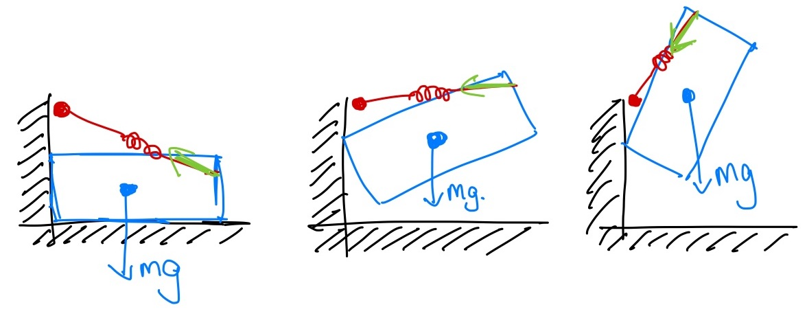
想象一根绷紧橡皮筋，连接手指与墙边、略高于盒子左上角的点。橡皮筋产生力矩，盒子像摆一样绕上角转动。到某个时刻，上角开始滑动，但同一橡皮筋继续让手指从上角向下推，完成动作。
如果改成估计滑动时刻、再重新规划的控制器，事情会麻烦得多。这里只用机器人模型，将接触点行为塑造成另一动力系统，就能完成这一切！
示例 8.5 基于刚度控制的翻盒策略¶
控制器简单得不能再简单：先让虚拟手指沿轨迹移到墙前，推盒子靠墙，建立支撑接触力；再把虚拟手指，即橡皮筋另一端，沿墙上移一点，剩下交给力学。
运行示例：在 Colab 中打开
此前让手指在 \(x\)、\(z\) 两方向像独立的质量—弹簧—阻尼系统，刚度 \(k\)、阻尼 \(b\) 还都相同。一般可用矩阵，分别记作 \(K_p\)、\(K_d\)：
。为了明确坐标系，注意点手指有 \({}^Wp^F = \begin{bmatrix} x, z\end{bmatrix}^T,\)，同式可写为
。有时在另一坐标系 \(A\) 中表达刚度、阻尼更方便：
8.2.4 位置与力混合控制¶
有些任务需要一个方向控力，另一个方向控位置。经典例子是擦拭、抛光：法向关心压力，切向用位置反馈跟踪轨迹。点手指最简单可在 \(z\) 控力、\(x\) 控位置：
。如果要在接触坐标系 \(C\) 等其他坐标系表达，可用
。法向控力不仅控制压得多重，也能容忍表面法线估计误差。位置控制若法线估错，可能一边离墙、一边压得过重；力控制则允许法向位置自然调整到产生所需压力的位置，从而跟随墙面。
图 8.5：位置与力混合控制的例子。机器人要压得足够重，让手指与书不滑，又要足够轻，让书能在桌面滑。这自然适合在世界 \(z\) 方向控力；而在 \(x,y\) 平面移动夹爪和书，更适合控位置。练习中可进一步探索。
位置或力不必二选一。可以同时施加刚度、阻抗形式的位置指令和前馈力：
。它比式（式 8.1）更一般，适当选择 \(K_p\)、\(K_d\)、\(f^F_{feedforward}.\) 就能实现明确的分方向模式。后面会看到，这很像 iiwa 等力矩控制机器人的接口。
8.3 一般情况：机械臂动力学方程¶
浮动手指、夹爪帮助理解基本概念，现在把这些策略落实为能发给机械臂的关节指令。
全驱动机械臂的方程具有明确结构：
。左侧推广了质量乘加速度，包含质量矩阵 \(M\)、科里奥利项 \(C\)；右侧是广义力之和：重力 \(\tau_g(q)\)，电机力矩 \(u\)，以及第 \(i\) 处接触笛卡尔力 \(f^{c_i}\)，其中 \(J_i(q)\) 是第 \(i\) 个接触 雅可比矩阵。前面随机物体落入箱子时简要介绍过，更多笔记见这里。下文假设机器人固定在桌上，没有浮动关节，所以使用 \(\dot{q}\)、\(\ddot{q}\)，代替 \(v\)、\(\dot{v}\)。
8.3.1 轨迹跟踪¶
暂时忽略接触项：
。仿真的正动力学已知关节力矩 \(u\) 和 \(q, \dot{q}\)，求加速度 \(\ddot{q}\)；控制用的逆动力学则已知 \(\ddot{q}\) 和 \(q, \dot{q}\)，求 \(u\)。其系统图为：
它实现：
，闭环得到 \(M(q)\ddot{q} = M(q)\ddot{q}_d.\)。由于 \(M(q)\) 可逆，就有 \(\ddot{q} = \ddot{q}_d\)。
实际中，接触力存在，动力学参数和状态 \(q\)、\(\dot{q}\) 也只是估计。因此选择加速度指令时要考虑误差。跟踪期望关节轨迹 \(q_0(t)\) 时，不应只二次求导并给定 \(\ddot{q}_0(t)\)，还可用：
，也可加入积分增益。
因此，System 还增加一个期望状态输入端口：
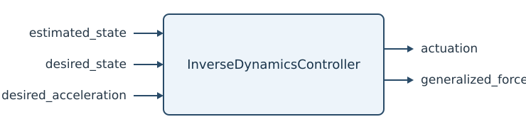
逆动力学控制在文献中也叫计算力矩控制，甚至前馈加反馈线性化控制，见 参考文献 8（第 11.4.1.3 节）。
补充说明：想一想：关节刚度控制与逆动力学控制有什么区别？
关节刚度控制取 \(\tau_{ff} = 0\) 时，闭环为：
，其中 \(\tau_{ext}\) 汇总接触等未建模力；逆动力学控制的闭环则为
。所以后者以加速度、而非力为单位写反馈，相当于把惯性矩阵塑造成对角矩阵。
硬件上能多准确地抵消动力学，取决于参数 \(\hat{M}(q)\)、\(\hat{C}(q,\dot{q})\) 的估计。刚度控制则只抵消重力，也可能补偿摩擦，不改变惯性，却已能达到许多目标性能。
8.3.2 关节刚度控制¶
我们最常通过 iiwa 的关节阻抗模式控制它，参考文献 9、参考文献 10 介绍得很好。从用户角度，可把它看作关节空间刚度控制：
，其中 \(K_p, K_d\) 是正对角矩阵，\(\tau_{ff}\) 是前馈力矩。实际还有关节摩擦补偿，见 参考文献 11，这里为简洁省略。控制器确实也改变惯性，因此叫阻抗而非仅刚度控制，但只改变转子惯性，用户不能设置；所以用户仍应按刚度控制理解。
补充说明：想一想：传统 PD 位置控制与关节刚度控制有什么区别？
代数差别很小：PD 通常是
，刚度控制是
，多了抵消重力、摩擦等已知模型项的部分。这需要估计模型与力矩控制。iiwa 有这样的模型，但多数大减速比机械臂未必有可信模型。小小改动却影响很大：稳态位置不再依赖误差产生所需力矩，因此可以大幅降低增益，让响应柔顺，同时在没有外力矩时仍跟踪良好。
8.3.3 笛卡尔刚度与操作空间控制¶
更接近点手指的办法，是让机器人在世界坐标系下像简单动力系统。先选末端坐标系 \(E\)，最好原点位于预期接触点。根据运动学、微分运动学，正运动学为：
。二阶导数虽然此前没写过，用链式法则即可。这里只讨论笛卡尔位置；朝向也能考虑，但三维旋转刚度的定义需要谨慎，例如 参考文献 12。
机械臂控制的一个重要思路，是直接在 \(E\) 下写机器人动力学。将关节力矩参数化为作用于刚体 \(B\)、点 \(E\) 的平移力 \(f^{B_E}_u\)：\(u = J^T(q) f^{B_E}_u\)，来自虚功原理。将其与机械臂方程（式 8.2）代入运动学式（式 8.3），并假设所有外部接触只发生在 \(E\)，得：
，其中
。再施加类似关节空间的控制律：
，即可得到末端期望闭环动力学：
。于是推末端时，整个机器人协调运动，让你感觉在推弹簧—阻尼系统。很漂亮！
如果 \(J(q)\) 不满秩，例如自由度多于末端控制维数，还需类似地稳定 雅可比矩阵 的零空间。现在控制的是力矩而非速度，自然对应于在末端任务零空间内工作的关节回中 PD：
。\(P\) 是动力学一致的零空间投影，见 参考文献 13。微分 IK 使用速度控制的零空间，这里则必须使用加速度层面的零空间。
这种指定任务空间动力学、让次要关节目标在零空间中工作的方式，由 参考文献 13 发展，称为操作空间控制。可以进一步组合有优先级的任务、关节空间目标，把低优先级放进主要任务零空间。和关节回中微分 IK 一样，也能用最小二乘优化理解。
8.3.4 iiwa 的一些实现细节¶
参考文献 9、参考文献 10 详细解释了低层阻抗控制实现。作者特别在执行器坐标、而非关节坐标中实现阻抗；两者之间有弹性传动。我猜其中有不少细微原因，但他们着重证明，这种实现能给出真正的无源性保证。
iiwa 也有笛卡尔阻抗模式。需要高性能末端刚度控制时，当然应该用它：内部更新比网络 API 快得多，许多细节也经过认真处理。但实际我们不用，因为切换关节、笛卡尔阻抗必须停止机器人；甚至改刚度或末端位置坐标系 \(C\)，也得停机，令人无奈。所以留在关节阻抗模式，需要时通过 \(\tau_{ff}\) 下发笛卡尔力。想了解驱动细节，可看 Franka Control Interface 文档，比较容易找到、阅读，功能也与 iiwa 类似。
还会看到，HardwareStation 中 IiwaDriver 的接口接收期望关节位置，却不接收期望速度，因为 iiwa 根本不允许我们直接发送期望关节速度。我们认为它对位置指令做数值微分得到速度，因此引入几个控制周期的延迟，有时还有非单调行为。我猜限制外部速度指令，是为了维持论文的无源性论证，也可能为了 API 更简单、安全，防止用户给出互不一致的位置、速度，即速度并非位置的时间导数。
补偿重力时，还可在示教器中一次性设置夹爪的集中惯性参数，运动中不能改。抓起物体，甚至移动手指后，重力变化都不会被控制器补偿。
Drake 的 JointStiffnessController 最接近 iiwa 实际控制，但仿真常用 InverseDynamicsController，原因有些微妙：数值性质更好。相同物理刚度下，其微分方程的数值刚性较弱，可以使用更大积分步长。真实 iiwa 常用 [800., 600, 600, 600, 400, 200, 200] N·m/rad 的关节刚度；直接以此仿真，需要较小步长。
8.4 把各部分连接起来¶
8.5 轴孔插装¶
源自机器人装配的经典力控制问题，是在很小运动学公差下配合两零件。最干净、著名的例子，就是把圆轴插入圆孔。如果轴是方的、孔是圆的，我也帮不了你。有意思的是，20 世纪 70 年代末、80 年代初，大量相关研究来自 MIT 与 Draper 实验室。
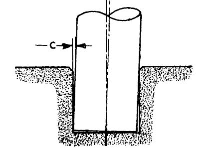
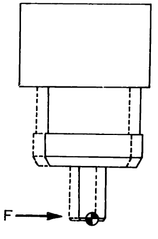
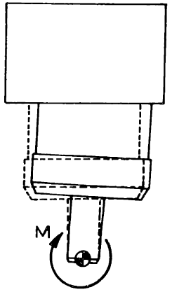
图 8.6：左：运动学公差为 \(c\) 的轴孔插装。中：希望对接触力产生的响应。右：希望对接触力矩产生的响应。图片转载自 参考文献 14，略去部分符号。
许多插装任务允许在零件或孔口加小倒角，配合水平方向柔顺，就能修正小位置误差。朝向误差更有意思：轻微偏斜就可能卡住，此时库仑模型中的摩擦力很大且不确定，必须避免。接触处允许旋转柔顺，就能减少卡死。你应该能看出，为什么这很适合力控制！
关键是旋转刚度要产生绕零件、接触处的转动，而非绕夹爪。刚度控制可实现，但公差极小时，感知、带宽成了限制。力控制领域一个特别精彩的发现，是用巧妙机械机构完全被动地实现远心柔顺（Remote Center Compliance，RCC），无需传感器，理想上带宽无限，见 参考文献 14！
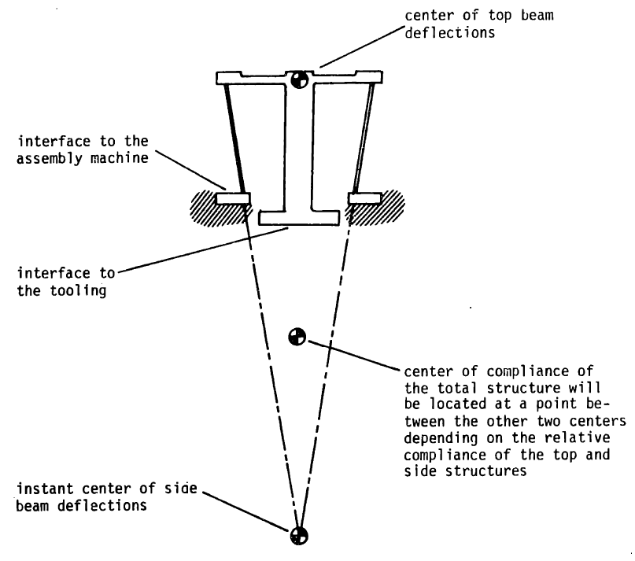
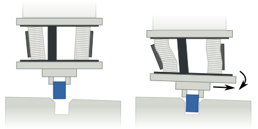
图 8.7：被动远心柔顺装置。左：参考文献 14 的概念示意。右：机械实现，图片作者 Arne Nordmann（2008）。产品例子见 这里，精彩的早期视频见 这里。
轴孔插装不仅催生重要的力学、控制思想，也影响了运动规划，见 参考文献 15。这些理念适用于许多可借柔顺接触完成的任务，例如开门、使用工具等。
8.6 练习¶
练习 8.1 力与位置控制¶
给定如下质点动力学：
其中 \(x\) 是位置，\(u\) 是输入力，\(f^{F_c}\) 是环境施加于点 \({F}\)、作用点为 \(c\) 的接触力。为同时控制机器人位置和力，提出：
定义系统误差为：
-
考虑自由空间，即 \(f^{F_c}=0\)，希望施加非零期望力 \(f^{F_c}_{desired} \neq 0\)，同时将位置调到零 \(x_d = 0\)。证明不可能同时实现两个零误差。可以令 \(\dot{x}=0,\ddot{x}=0\)，根据动力学、控制律、期望位置与力，分析稳态误差。
-
再考虑机器人与位于 \(x_d = 0\) 的墙发生刚性接触，期望力非零 \(f^{F_c}_{desired} > 0\)。分析稳态误差，证明此时可达到零误差。
练习 8.2 翻起盒子¶
考虑前面示例的初始阶段，此时 \(\theta\approx 0\)。\(B\) 是盒子，\(A\) 是转动支点，\(C\) 是手指与盒子 \(B\) 的接触点。假设力仍近似沿坐标轴，但地面接触只作用于支点 \(A\)。
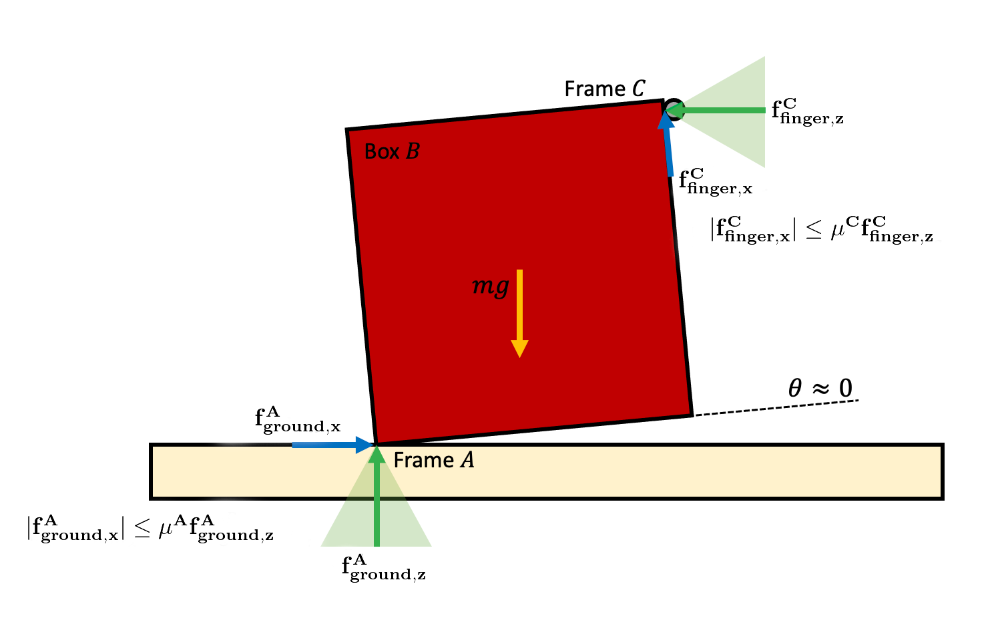
-
推力不足，即 \(f^{C}_{finger,z}\) 太小时，无法产生足够摩擦 \(f^{C}_{finger,x}\) 抵抗重力。对支点 \(A\) 求力矩和，得到 \(\tau^{A}_{\text{total}, y}\)，据此推导法向力 \(f^{C}_{finger,z}\) 的下界，用 \(m,g,\)、\(\mu^C\) 表示。可假设盒子为正方形，重力力臂是 C 点力臂的一半。
-
推得太大，即 \(f^{C}_{finger,z}\) 太大，支点会向左滑。先用水平力平衡求 \(f^{C}_{finger, z}\) 上界，再用 y 方向力平衡得到含 \(f^{C}_{finger,z}\) 的等式。结合两方向平衡关系和 (a) 的力矩下界，求法向力 \(f^{C}_{finger,z}\) 的上界，用 \(m,g,\)、\(\mu^A\) 表示。假设 \(\mu^A < 1\)，且已得到正的 \(\tau^{A}_{\text{total},y}.\)。
-
结合上下界，推导动作可行时 \(\mu^A,\mu^C\) 必须满足的关系。如果 \(\mu^A\approx 0.25\)，木材与金属接触，\(\mu^C\) 至少多大？如果 \(\mu^A=1\)，混凝土与橡胶接触呢？
练习 8.3 力与位置混合控制¶
本题分析并实现混合控制器拖动书本，就像课堂的这段视频。所有工作都在 对应 notebook 中完成，具体包括：
-
分析动作可行的条件。
-
实现完成动作的控制律。
练习 8.4 轴孔插装控制¶
本题探索轴孔插装，通过两种刚度控制器理解间接力控制。所有工作都在 对应 notebook 中完成，具体包括：
-
为浮动轴实现刚度控制，此时构型空间与任务空间相同。
-
为完整平面 iiwa 实现操作空间刚度控制。
参考文献¶
-
K. Salisbury , "Active stiffness control of a manipulator in Cartesian coordinates" , Proc. of the 19th IEEE Conference on Decision and Control , 1980 .
-
Neville Hogan , "Impedance Control: An Approach to Manipulation. Part I - Theory" , Journal of Dynamic Systems, Measurement and Control , vol. 107, pp. 1--7, Mar, 1985 .
-
Neville Hogan , "Impedance Control: An Approach to Manipulation. Part II - Implementation" , Journal of Dynamic Systems, Measurement and Control , vol. 107, pp. 8--16, Mar, 1985 .
-
Neville Hogan , "Impedance Control: An Approach to Manipulation. Part III - Applications" , Journal of Dynamic Systems, Measurement and Control , vol. 107, pp. 17--24, Mar, 1985 .
-
"Modeling and Control of Complex Physical Systems: The Port-Hamiltonian Approach" , Springer-Verlag , 2009 .
-
Luigi Villani and J De Schutterm , "9" , in: Force Control, Springer Handbook of Robotics , 2008 .
-
Daniel E Whitney , "Historical perspective and state of the art in robot force control" , The International Journal of Robotics Research , vol. 6, no. 1, pp. 3--14, 1987 .
-
Kevin M Lynch and Frank C Park , "Modern Robotics" , Cambridge University Press , 2017 .
-
Christian Ott and Alin Albu-Schaffer and Andreas Kugi and Gerd Hirzinger , "On the passivity-based impedance control of flexible joint robots" , IEEE Transactions on Robotics , vol. 24, no. 2, pp. 416--429, 2008 .
-
Alin Albu-Schaffer and Christian Ott and Gerd Hirzinger , "A unified passivity-based control framework for position, torque and impedance control of flexible joint robots" , The international journal of robotics research , vol. 26, no. 1, pp. 23--39, 2007 .
-
Alin Albu-Schaffer and Gerd Hirzinger , "A globally stable state feedback controller for flexible joint robots" , Advanced Robotics , vol. 15, no. 8, pp. 799--814, 2001 .
-
H.J. Terry Suh and Naveen Kuppuswamy and Tao Pang and Paul Mitiguy and Alex Alspach and Russ Tedrake , "SEED: Series Elastic End Effectors in 6D for Visuotactile Tool Use" , Under review , 2022 . 文献链接
-
Oussama Khatib , "A Unified Approach for Motion and Force Control of Robot Manipulators: The Operational Space Formulation" , IEEE Journal of Robotics and Automation , vol. 3, no. 1, pp. 43-53, February, 1987 .
-
Samuel Hunt Drake , "Using compliance in lieu of sensory feedback for automatic assembly." , PhD thesis, Massachusetts Institute of Technology, 1978 .
-
Tomas Lozano-Perez and Matthew Mason and Russell Taylor , "Automatic synthesis of fine-motion strategies for robots" , The International Journal of Robotics Research , vol. 3, no. 1, pp. 3--24, 1984 .
继续阅读：上一章：移动操作（中文） · 全书目录与前言（中文） · 下一章：物体检测与分割（中文）
无障碍访问 · © Russ Tedrake, 2026